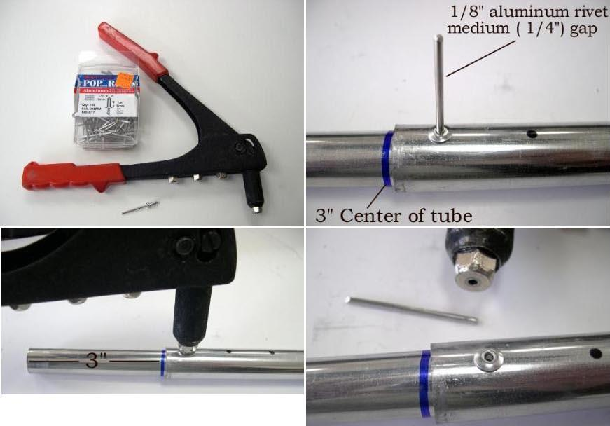

| Sonnet (inserts) | Menu Previous Page Next Page |
|
 Inserts - 6" X 5/8" (152 X 16mm) inserts connect the 3/4" (19mm) stringer sections. Drill the first of three 1/8" (3mm) holes in the first 3 inches if the stringer and insert and pull the 1/8" (3mm) rivet. This will keep the insert in place during additional drilling. Use 1/8" (3mm) medium gap rivets for the inserts. The 6" (152mm) insert is evenly divided inside and outside of the stringer. |
|